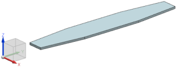
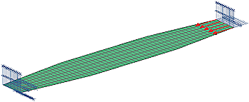
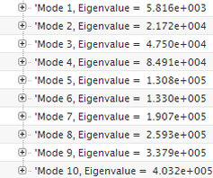
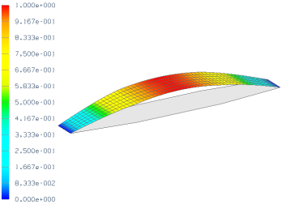

Advanced Simulation calculates buckling loads based upon linear theory. Linear theory restricts the applicability to cases where the deformations in the pre-buckled configuration are small and the material behavior is elastic. The tapered flat bar shown below is such a case.
The compressive load that causes a column to buckle is termed the critical load. Use the SOL 105 Linear Buckling solution sequence to calculate the critical load of the tapered bar shown below if both ends are free to rotate about the X-axis.

|
Property |
Value |
|
Part |
tapered_bar.prt |
|
Solution sequence |
SOL 105 Linear Buckling |
|
Idealization |
Use a midsurface representation See note regarding symmetry |
|
Material |
Steel |
|
Physical Property |
Thin shell collector type Default thickness 4 mm |
|
Mesh |
CQUAD8 Element size 5 mm |
|
Constraints |
See note regarding constraints |
|
Loads |
See note regarding loads |

To create a midsurface representation:
Use the Promote command to promote the body in the idealized part.
Use the Midsurface by Face Pairs command to define the midsurface.
Turn off the display of the unused polygon body in the FEM.
Although structural symmetry exists, using symmetry in the model prevents asymmetrical buckling modes from being calculated.
The critical load of a structure is highly dependent upon how the structure is constrained. For this case, model both ends to rotate freely about the X-axis, fix one end from translating, and fix the other end so that it is able to translate in the XY-plane only. To apply these constraints, use the User Defined Constraint command.
For the edge closest to the coordinate system in the above illustration, fix all the DOF except DOF4.
For the edge at the other end, fix DOF3, DOF5, and DOF6.
Apply a compressive force in the Y-direction to the end of the bar that is free to translate in the XY-plane. Apply the load at the midpoint of the edge, or distribute the force uniformly over the edge. Because the critical load is the product of the applied load and the eigenvalue for Mode 1, the magnitude of the force is arbitrary.
To access the analysis results, in the Simulation Navigator, double-click Results. To view the modes that were calculated, in the Post Processing Navigator, expand Solution 1. Next, expand Subcase-Buckling Method.
The critical load is the product of the applied load and the eigenvalue for Mode 1. The results shown below are from a model using a unit compressive load. Therefore, the critical load is about 5820 N.

The buckled shape associated with Mode 1 is shown below.

The buckled and undeformed shapes are shown. To display the undeformed shape, use the Edit Post View command to open the Post View dialog box. In the Post View dialog box, select Show undeformed model.
For your reference, a completed model for this project is located in the ..\projects\solved_project_models folder.